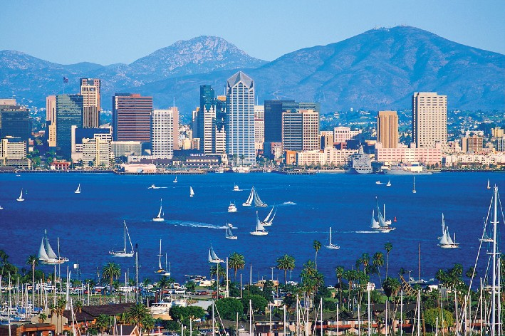

Меню |
Сан-Диего Сан-Диего (англ. San Diego) — город на юго-западе США на берегу Тихого океана близ границы с Мексикой, административный центр округа Сан-Диего в штате Калифорния. Население 1 338 348 млн жителей (2012), с пригородами 2,9 млн. По численности населения Сан-Диего второй в штате после Лос-Анджелеса и восьмой в США. В городе расположена основная база ВМФ США на Тихом океане. |
|
Copyright © 2014. Все права защищены. |
|